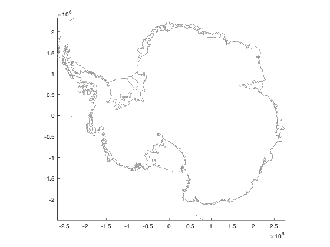
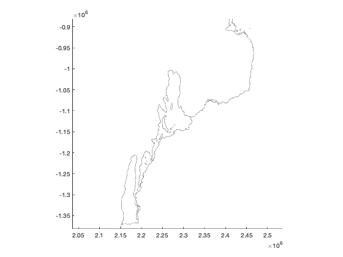
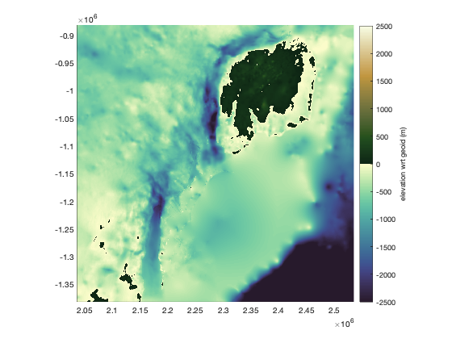
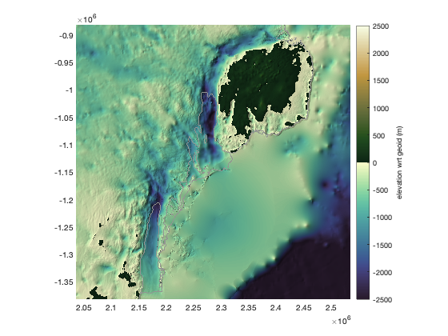
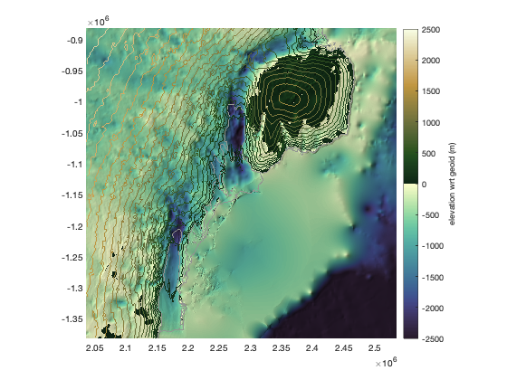

bedmachine documentation
bedmachine loads and plots data from Morlighem et al.'s BedMachine datasets. (This function is for Antarctica only)
See also bedmachine_data, bedmachine_interp, and bedmachine_profile.
Contents
Requirements
This function requires a set of Matlab tools and a Bedmachine dataset, and both will depend on where you're working. Get them here:
- For Antarctica:
Syntax
bedmachine bedmachine(variable) bedmachine(variable,'contour',PropertyName,PropertyValue,...) bedmachine(outline,LineProperty,LineValue,...) h = bedmachine(...)
Description
bedmachine plots a gray grounding line and coast line from BedMachine.
bedmachine(variable) plots any BedMachine variable as an imagesc plot. The variable can be:
- 'gl' grounding line
- 'coast' coast line
- 'hl' approximate hydrostatic line given by flex=0.99.
- 'mask' 0 = ocean, 1 = ice-free land, 2 = grounded ice, 3 = floating ice, 4 = non-Greenland land
- 'surface' meters relative to EIGEN-EC4 geoid.
- 'thickness' meters
- 'bed' meters relative to EIGEN-EC4 geoid.
- 'errbed' meters
- 'source' Greenland: 0 = none, 1 = gimpdem, 2 = Mass conservation, 3 = synthetic, 4 = interpolation, 5 = hydrostatic equilibrium, 6 = kriging, 7 = RTOPO-2, 8 = gravity inversion, 10+ = bathymetry data)
- 'source' Antarctic: 1 = REMA/IBCSO, 2 = Mass conservation, 3 = interpolation, 4 = hydrostatic, 5 = Kriging, 6 = gravity inversion
- 'geoid' meters above WGS84 ellipsoid
- 'base' meters base of the ice sheet (bottom of ice shelves, but same as bed over grounded ice.)
- 'wct' meters water column thickness (derived, not an official BedMachine product.)
- 'taf' meters thickness above flotation (derived, not an official BedMachine product.)
- 'flex' dimensionless coefficient of tidal flexure (can slightly exceed 1; see Vaughan 1995 or Holdsworth 1969; derived, not an official BedMachine product; Requires Image Processing Toolbox. )
bedmachine(variable,'contour',PropertyName,PropertyValue,...) plots any BedMachine variable as a contour plot.
bedmachine(outline,LineProperty,LineValue,...) plots any of the following, with optional line formatting:
- 'gl' grounding line
- 'coast' coast line
- 'hl' approximate hydrostatic line given by flex=0.99.
h = bedmachine(...) returns a handle h of the plotted object(s).
Examples
A quick plot of Antarctica's grounding line and coast line:
bedmachine
Now zoom in to the Totten Glacier region:
mapzoomps('totten glacier')
 Plot the bed.
Note: It's best to zoom to the area of interest before using the bedmachine function to load and plot data, because if a map is already open, the bedmachine function only loads and plots enough data to fill the current extents of the map. If a figure isn't already open and zoomed to the area of interest, the bedmachine| function will load and plot all BedMachine data, which will be a little bit slower and use more memory.
bedmachine bed % Add a colorbar: cb = colorbar; ylabel(cb,'elevation wrt geoid (m)') caxis([-1 1]*2500) % sets color axis limits cmocean topo % sets colormap to topography
Add a little hillshade to give it a sense of depth
shadem(2,[218 81])
In the shaded relief map above, you see how blurred out the coastal bathymetry is here. That's because there's very little ship data from that chronically sea-ice-choked region. This is to say, use the coastal bathymetry here with a bit of caution and skepticism. And always click around with the shadem function to get a sense of how smeared-out or potentially over-fit the topography is at any given location.
Add surface contours:
bedmachine('surface','contour',0:100:5000)
Add a blue coastline, a thick black grounding line, and an inset map in the bottom right (southeast) corner:
bedmachine('gl','k','linewidth',1) bedmachine('coast','b') mapzoomps('se','frame','off')

Citing this dataset
If you use BedMachine data, please cite the Morlighem paper listed below. And if this function is useful for you, please do me a kindness and cite my Antarctic Mapping Tools paper.
Morlighem, M., E. Rignot, T. Binder, D. D. Blankenship, R. Drews, G. Eagles, O. Eisen, F. Ferraccioli, R. Forsberg, P. Fretwell, V. Goel, J. S. Greenbaum, H. Gudmundsson, J. Guo, V. Helm, C. Hofstede, I. Howat, A. Humbert, W. Jokat, N. B. Karlsson, W. Lee, K. Matsuoka, R. Millan, J. Mouginot, J. Paden, F. Pattyn, J. L. Roberts, S. Rosier, A. Ruppel, H. Seroussi, E. C. Smith, D. Steinhage, B. Sun, M. R. van den Broeke, T. van Ommen, M. van Wessem, and D. A. Young. 2019. Deep glacial troughs and stabilizing ridges unveiled beneath the margins of the Antarctic ice sheet, Nature Geoscience. doi:10.1016/j.cageo.2016.08.003.
Greene, C. A., Gwyther, D. E., & Blankenship, D. D. Antarctic Mapping Tools for Matlab. Computers & Geosciences. 104 (2017) pp.151-157. doi:10.1016/j.cageo.2016.08.003.
Author Info
This function and supporting documentation were written by Chad A. Greene of the University of Texas at Austin, December 2019.